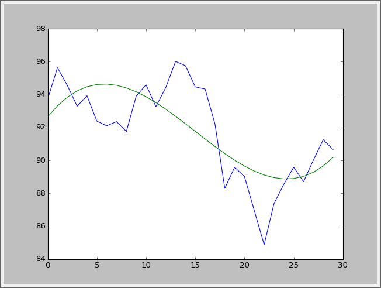
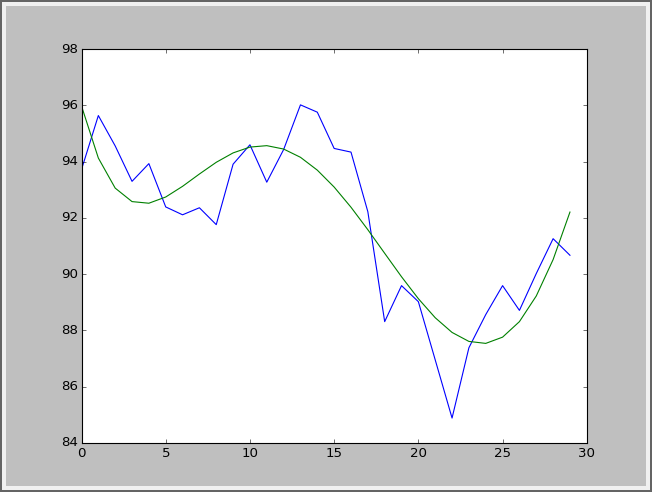
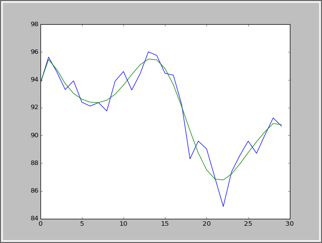
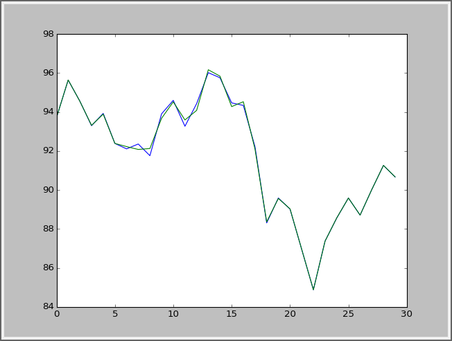

Summary:使用Numpy进行多项式拟合
numpy中有一系列函数用以辅助求解数据的拟合函数。 ps:数据拟合的相关数学知识有:微积分,泰勒展开式,无穷级数等.
现有数据如下： BHP数据
格式为[股票代码0，日期1，开盘价2，最高价3，最低价4，收盘价5，成交量6] (数据来源：《Numpy数据分析基础教程（第2版）》第4章)
数据准备
首先使用loadtxt()读入收盘价数据:
bhpShouPan = np.loadtxt(bhpCsv, delimiter=',', usecols=(6,), unpack=True)
获得多项式拟合函数
使用polyfit函数可以获得一系列数据点的拟合函数.
读入的数据作为y值,手动生成x值序列.
# 设定x值序列
t = np.arange(len(bhpShowpan))
# 设定多项式拟合精度
deg = 3
# 获得多项式函数对象
# polyfit()至少传入3个参数
# 参数x，y分别表示一个保存多个数据的数组
# 参数deg表示使用最高几次幂的多项式进行拟合，值越大则精度越高
showpanPoly = np.polyfit(t, bhpShowPan, deg)
# 直接打印可以看到多项式函数的系数
# print:[ 1.80863058e-03 -8.14748206e-02 7.56906684e-01 9.26418187e+01]
print showpanPoly
此时showpanPoly就是源数据的3次幂多项式拟合函数对象.
获得多项式拟合函数的值
使用polyval()函数可以获得给定的多项式函数在指定x值的对应y值. 传入单个值时,也返回单个y值.传入多个值时,也返回多个y值.
# 获得下一个拟合(预测)数据
# 预测数据为90.8547064404
nextVal = np.polyval(showpanPoly, t[-1] + 1)
获得多项式函数的导函数
当需要获得多项式函数的极值(极大值,极小值)时,需要先求出导函数. 使用polyder()函数可以对多项式函数进行求导,得到导函数.
# 获得导函数
der = np.polyder(showpanPoly)
# 打印导函数的系数(导函数最高次幂是多项式函数的最高次幂-1)
# print:[ 0.00542589 -0.16294964 0.75690668]
print der
求多项式函数的根
使用roots()函数可以求多项式函数值等于0的解.即满足y=0时,x的所有解. roots()函数的结果是一个大小为多项式最高次幂的数组.
# 求导函数的解
derRoot = np.roots(der)
# print:[ 24.28842714 5.7434365 ]
print derRoot
通过计算得出导函数的解,代入多项式函数即可得到多项式函数的极值点了.
提高拟合效果-采用更高阶的拟合函数
上文采用的是3阶多项式拟合,比较源数据和拟合数据如下图(蓝色为源数据,绿色为拟合值): 
可以看出你好效果并不是很好.现在改用5阶多项式拟合,再看看拟合效果: 
采用10阶多项式拟合: 
使用100阶的函数(好吧这个几乎就是源数据了): 
使用更高阶的指数进行拟合,可以得到更好的拟合效果.但计算量也更大，需要根据实际需求进行设定。
提高拟合效果-平滑处理
也可以在拟合之前,对源数据进行平滑处理. 比如可以使用’移动平均线’的方式进行平滑处理.